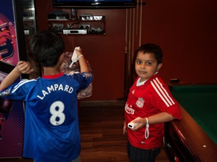
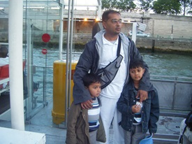
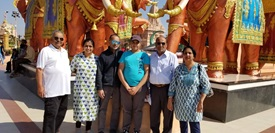
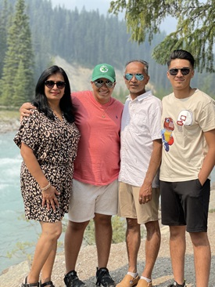
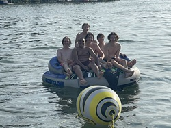
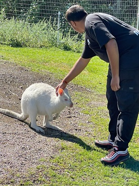
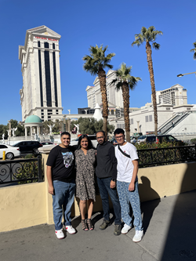
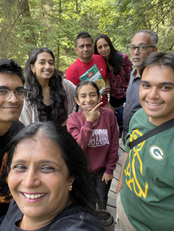
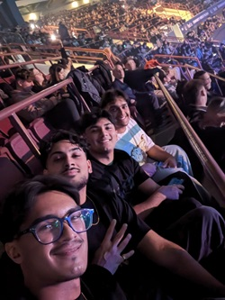

Places I Travelled To!
Trip 1:United Kingdom
My first trip was to the United Kingdom. As I have many family members in the UK from London, to Lecister, to Liverpool and Manchester. This was the first time our family as a whole stepped out of the country together, to go visit family and do sightseeing in London. Beside us We can picture of me in the Liverpool jersey and my brother in the Chelesa jersey inside my aunt's home in Chigwell, UK.
Trip 2:Europe
This was the second trip that me and my family took outside of the country. This time we went for a trip around Europe, where we visited the UK again, France, Belgium, Germany, Switzerland, Spain, Italy, Spain and Portugal. We took a tour bus company that took us around in a bus and ferries around Europe. It was mostly doing sightseeing and visiting important monuments in each country. The best part of this trip I remember is visiting DisneyLand in Paris. And on the right is a picture of me, my dad and my brother on ferry in France.
Trip 3:Southern United States
The next trip me, my mom and my brother took was to the Southern United States, which was mainly Georgia and Florida. We went to Georgia for a my family's wedding, then after we went down to Florida and went to Orlando. Where we visited Disney World and Universal Studios. After we went to Tampa Bay , where I went to a huge theme park. It was a great trip and this was the first time I visited the US. The image here is a photo with my cousins, aunt, my mom, my brother and me.

Trip 4:India
My fourth trip out of the country with my family was to my home country of India. I was always wanting to go before this but never got a chance. But during Grade 9 winter break, me and my family booked a trip to India, where I spent Christmas and New Years. I met and got to catch up with family that I had never met, and it was great meeting them all. Plus, it gave me a huge eye opening to how much different life is in India compared to Canada. The picture here is a photo of me, my mom, my dad, my grandpa and my aunt and uncles.
Trip 5:Panaroma and Invermere
This was just a simple road trip, that me and my family in Calgary took to Panorama and Invermere, where we stayed in a resort in Panorama, and did many activities like zip lining, canoeing, Hiking and sightseeing. There were many great memories created on this trip and all together was a great time.
Trip 6:Turtle Lake
This was a trip I took with 6 of my best friends for a celebration for our high school graduation. We took a road trip out to my friends Cabin in Saskatchewan, where his cabin is located on the lake side of a lake called Turtle Lake. We had a great time, canoeing, tubing, hiking and doing many activities, We created many everlasting memories that week, and here you will see me and my friends sitting on the tube in the water.
Trip 7:Kelowna
This was the next trip I took with my family to Kelowna. It was a road trip we took from Calgary To Kelowna, with me, my brother, mom and dad. Me and my brother did Ziplining, Seadooing and ate at some great local spots in the town. We also visited the Kangaroo farm in Kelowna, which was the highlight of the trip, where I got to feed and pet Kangaroos, as you can see in this picture.
Trip 8:Las Vegas
This trip to Las Vegas was taken because my brother recently had turned 21, and wanted to expeience the bars and clubs in the US, so us a family took a trip Las Vegas, where we visited the Grand Canyon, Old Downtown in Las Vegas, got to Drive supercars. The supercar I got to drive was the Mercedes AMG GTR, which was a experience I will never forget. Also got to to try some food that is only avaiable in the US. In the photo you can see my and my family stood in front of Cesars Palace.
Trip 9:West Coast Road Trip
This was a trip we took, as we had family from the east coast of the US come to visit so we took a road trip first to Idaho, then Seattle, then Vancouver and Victoria and finally Penticton. We visited many different landmarks, in Idaho we went to a theme park, in Seattle we went to the Harbour, Space needle, Glass Museum and Aquarium. In Vancouver we went to a suspension bridge and hiked. In Penticton We went to the lake and hiked. In the photo, it is my family at the Capilano Suspension Bridge.
Trip 10:Vancouver
Even though we went to Vancouver just in the summer, me and my three brothers had to go back. This time it was for a concert, and the artist was Travis Scott. He is a famous hip hop artist, and was coming to perform his music at Rogers Arena. We all together had a great time, with us exploring the city and the suburbs beside it. When we went to the concert, it was a night we would never forget, as it was a once in a lifetime experience. This was the first time us four had traveled alone, without our parents. And It was an experience we learned a lot from.
